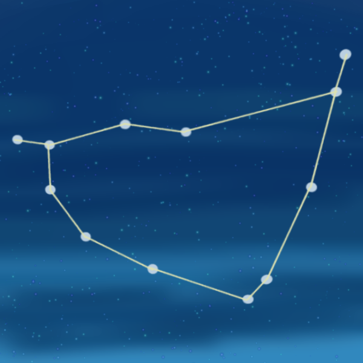
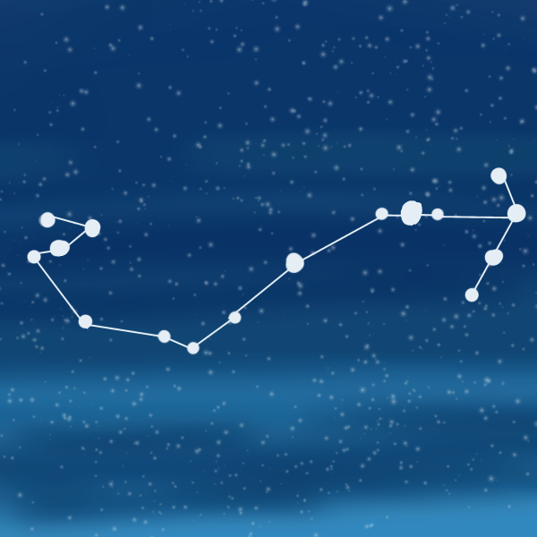
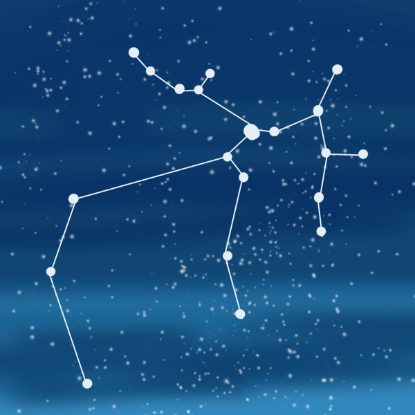
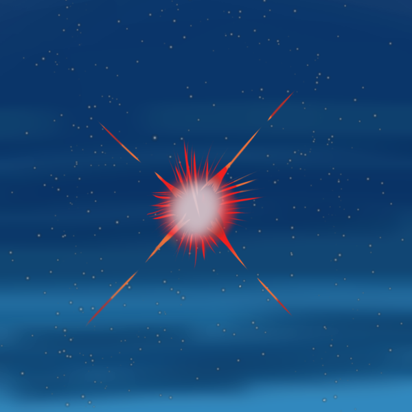

CONCEPT｜星と月の雑学図鑑
「星と月の雑学図鑑」は、夜空や宇宙の神秘をもっと身近に感じてもらうためのオンラインWeb図鑑です。
遠い宇宙の物語を、もっと身近に
大昔から、人々は夜空に浮かぶ星々を繋ぎあわせ、神話や物語を紡いできました。ただの光の点に見える星たちも、その成り立ちや歴史を知ることで、まったく違った表情を見せてくれます。「星と月の雑学図鑑」は、難しく思われがちな天体の世界を、親しみやすいストーリーとお届けするWEB図鑑サイトです。

今日の月相と、誰かに話したくなる雑学
画面左上の月のマークは、今日実際に空に浮かんでいる「本当の月の形（月相）」をリアルタイムに計算して表示しています。月が毎日満ち欠けするように、夜空の表情は少しずつ変化しています。12星座はもちろん、ブラックホールや不思議な天体まで、読めば夜空を見上げたくなる雑学をギュッと詰め込みました。

カーソルを動かして、夜空に星を降らせよう
画面上でマウスを動かすと、カーソルの軌跡を追うようにキラキラとした星が生成されます。さらに画面の好きな場所をクリックすると、夜空からたくさんの星が降り注ぎます。サイトを読みながら、手元で小さな星空の演出をお楽しみください。

サイト内に隠された宇宙のギミック
検索窓に「ブラックホール」と入力して検索すると、画面中央に漆黒のブラックホールが現れる隠し演出を搭載しています。また、掲示板（BOARD）の入力欄に「星」や「star」と書き込むと、10秒間だけ画面上空から激しい星空が降り注ぐかも…？ぜひ探してみてください。
